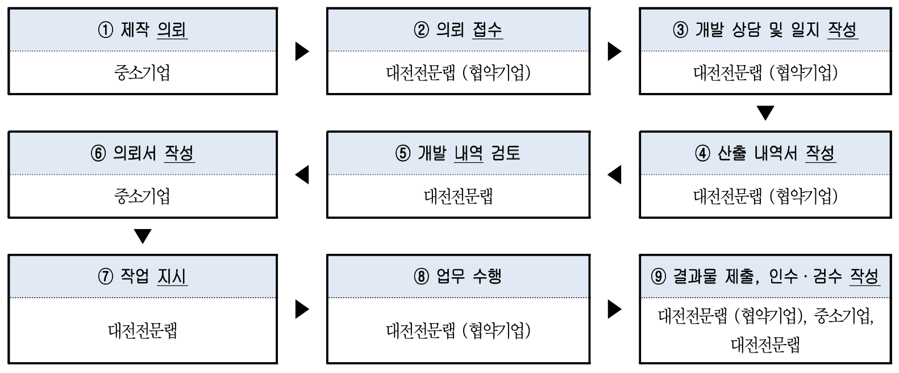
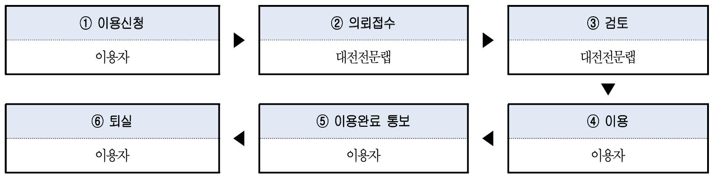

제1장 총칙
제1절 통칙
제1조(목적) 이 규정은 한국전자통신연구원(이하 “ETRI”이라 한다)이 운영하는 메이커스페이스 DID 기술융합공작소(이하
‘대전전문랩’이라
한다)의 관리·운영에 관하여 필요한 사항을 규정함을 목적으 로 한다.
제2조(적용범위) 대전전문랩의 관리·운영에 관한 사항은 하위 시행령을 포함하는 법규(중소기업 관련 법규 포함), 대전광역시 조례
및
창업진흥원과 ETRI간의 협약, 창업진흥원의 운영 지침에서 정한 사항을 제외하고는 이 규정에서 정하는 바에 의한다.
제3조(용어의 정의) 이 규정에서 사용하는 용어의 정의는 다음 각 호와 같다.
- 1. “전기·전자 제품”이라 함은 각종 사물에 전기 또는 전자적 기능이 포함된 시작품, 시제품 또는 제품을 말하며, 통신 기능과 이용자를 위해 소프트웨어로 처리된 것까지 포함한다.
- 2. “시작품”이라 함은 제품의 중요한 기능들을 포함하는 제품의 초기 모델로, 제조 공정이 기업의 개발실이나 연구소에서 디자인, 또는 기능을 검증하기 위하여 제작한 것을 말한다.
시작품에는 디자인 검토용 프로토타입과(디자인 목업 Design Mock-up), 기능 검토용 프로토타입으로 구분된다.
- 3 “시제품”이라 함은 설계 도면이 확정되어 실제 제조 공정에서 만들어 보는 것으로서, 양산 제조 시, 공정 및 품질의 문제 여부를 사전에 검토하고, 설계 품질과 제조 품질의 차이점을
분석할 목적으로 제작되는 것을 말한다.
- 4 ‘가공실’은 시작품/시제품/제품의 제작 지원 시설을 말한다.
- 5 “회의실”이라 함은 주최자가 다수의 참가자를 유치하여 개최하는 각종 회의, 이벤트, 기타 행사에 사용하기 위해 구획된 '대전전문랩'의 공간을 의미한다. 회의실을 말하며, '대전전문랩'
내에 위치한 회의실을 말한다.
- 6 “협약 기업”이라 함은 대전전문랩의 시설, 장비, 회의 시설과 관련한 전문적인 지식을 보유한 인력을 지원받기위해 대전전문랩과 협약을 체결하거나 시제품제작신청을 제출한 기업을 말한다.
- 7 “가공 대행”이라 함은 이용자의 요청에 의해 대전전문랩이 대전전문랩의 시설을 활용하여 가공하는 것을 말한다
- 8 “협력 업체”라 함은 대전전문랩이 메이커, 중소기업지원을 위해 협력 관계를 맺은 기업을 말한 다.
- 9 “이용자”라 함은 시작품/시제품/제품 제작 지원 시설, 회의실을 사용하는 예비창업자, (일반)메이 커스페이스 운영자, 개인(메이커), 중소기업, 협회·단체, 대학·연구기관 및 소속
임직원을 말한다.
- 10 “참가자”라 함은 대전전문랩이 개최하는 행사에 참가하는 자를 말한다.
- 11. “중소기업”이라 함은 중소기업기본법과 중소기업기본법시행령에 정한 기준에 부합하는 규모의 기업으로 ‘지원 대상 중소기업’으로 별도로 정한 기업을 말한다.
- 12. “웹사이트”라 함은 대전전문랩의 홈페이지인 http://didmakerspace.kr를 말한다.
- 13. “1회 이용”이라 함은 '대전전문랩'의 예약 시스템에 기재된 서비스(서비스, 시설, 장비, 비품, 설비, 워크숍 참가, 컨설팅, 가공 대행 등)을 1건 이상을 이용함을 말한다.
- 14. “이용료”라 함은 대전전문랩 장비 운영을 위해 발생되는 재료비, 전기세, 보험료, 유지보수, 교 정비, 감가상각비 등을 감안하여 산출되며 장비 이용 및 서비스 이용시 개인이나
기업이 부담하는 비용을 말한다.
- 15. “현장관리자”라 함은 대전전문랩의 직원 또는 협약 기업의 임직원을 말한다.
제4조(운영 방법)
- 1. 대전전문랩의 시설(시작품/시제품/제품 제작 지원 시설, 회의실)은 협약 기업과 체결한 운영 협약에 의거 운영한다.
- 2. 협약 기업은 제3장 협약 기업의 의무를 준수하여야 한다.
제5조(지원 대상) '대전전문랩'의 장비 및 시설의 지원 대상은 다음의 각호를 모두 충족하여야 한다.
- 1. 이용자는 시작품/시제품/제품을 개발하거나, 개발 계획을 보유하고 있어야 한다.
- 1. 이용자는 전기·전자(H/W, S/W), 기구가 포함된 개발 계획을 보유하고 있어야 한다.
- 2. 이용자가 기구만 포함된 개발 계획을 보유하고 있는 경우 원칙적으로 지원 대상에서 제외한 다.
- 3. 다만, 제5조 1항의 2의 경우, 대전전문랩에서 이용 계획서를 검토하여, 이의 사용을 허가할 수 있다.
- 2. 지원 대상은 (예비)창업자, 일반 메이커스페이스 운영자, 개인(메이커), 중소기업, 협회·단체, 대학· 연구 기관 및 소속 임직원으로 한다.
- 3. 대전전문랩은 대전, 세종, 충청 이외 지역의 (예비)창업자, 개인(메이커), 협회·단체, 대학·연구기 관 및 소속 임직원 등의 지원은 지원 사업의 목적 및 재원의 출처, 기타 지역
제한이 필요한 경우, 지원 또는 사용을 제한할 수 있다.
- 4. 회의실의 경우, 영리를 목적으로 하는 각종 회의, 이벤트, 기타 행사는 원칙적으로 제한된다.
제6조(지원 내용) 대전전문랩의 지원 내용은 다음 각 호와 같다.
- 1. 시작품/시제품/제품 설계 지원
- 2. 제품 개발을 위한 이용자의 시작품/시제품/제품 협약기업 가공 대행
- 3. 제품 개발을 위한 이용자의 시작품/시제품/제품 이용자 직접 가공
- 4 시작품/시제품/제품의 성능 측정·분석 지원
- 5.
- 6. 시작품/시제품/제품 개발·양산 관련 전문업체 협업 지원
- 7. 기타 제품 개발·양산, 성능 측정·분석 지원
- 8. 시작품/시제품/제품 설계·디자인, 제품 개발·양산 등 관련 분야 전문가를 통한 연계 지원 및 컨설팅 9 기업 내·외부 아이디어 발굴 및 회의실 대여
- 9. 기업 내·외부 아이디어 발굴 및 회의실 대여
- 10. 기타 본 규정의 목적에 부합하다고 대전전문랩이 지원하는 사업
제2절 운영 조직
제7조(조직 및 정원) 대전전문랩 운영에 필요한 조직 및 정원은 ETRI의 직제 및 정원 규정, 창업 진흥원과의 협의에 의해 시행한다.
제8조(실행위원회 구성)
- 1. 대전전문랩은 대전전문랩 시설 및 장비 서비스의 효율적인 운영을 위하여 대전전문랩 주관 기관 및 참여기관의 멤버로 실행위원회를 구성할 수 있다. 실행위원회의 구성원은 ETRI, 대전
광역시, 대전창조경제혁신센터, 따뜻한메이커연구소 등 전문랩 관련 기관의 책임자 및 전담인 력으로 구성한다.
- 2. 실행위원회는 위원장과 간사 각 1인을 두며, 이의 선출은 실행위원회 전체회의를 통해 선출 한다.
제3절 운영위원회
제9조(설치 및 기능)
- 1 대전전문랩 운영의 관리,운영,활성화에 관한 주요 정책을 논의하기 위하여 대전전문랩 관련 기관 전문가 중에서 운영위원을 선별하여 운영위원회를 운영할 수 있으며, 제9조 2항부터 제
14조까지는 운영위원회를 두는 경우에만 적용된다.
- 2 운영위원회는 다음 각 호의 기능을 수행한다.
- 1. 대전전문랩 관리·운영 및 활성화와 관련된 주요 정책을 논의, 의결
- 2. 사업 참여 기업의 진단 기준 수립 및 대전전문랩 활성화 프로그램 등 사업내용 3. 기타 대전전문랩의 관리·운영에 필요하다고 인정되는 사항
- 3 사업의 효율적 수행을 위하여 ETRI는 기업 평가 분야별 전문가로 구성된 별도의 심사위원 회 등을 구성하여 기업 등의 선정을 위한 심사업무 등을 수행하게 할 수 있다.
제10조(구성 및 임기)
- 1 운영위원회는 당연직 및 위촉직으로 총 10명 내외로 구성한다.
- 2 당연직은 대전전문랩 총괄책임자1명, 대전광역시 1명으로 총2명을 위촉한다.
- 3 위촉직은 위원장 1인을 포함하여 관련분야 전문가, 유관기관 관계자, 메이커 스페이스 운영 관계자 중에서 추천하며 실행위원회에서 위촉한다.
- 메이커 전문가
- 교육청, 대전평생교육진흥원
- 대전테크노파크 지능형로봇센터
- 일반랩/민간 메이커 스페이스 운영자
- 메이커 커뮤니티(대전.세종메이커협의회 등)
- 대학교수 (대전창업보육협의회 회장 등)
- 대전시 의원
- 4 위원의 임기는 2년으로 하며 연임할 수 있다.
- 5 위원의 임기가 종료하고 운영위원회가 재구성되지 아니한 경우에 위원의 자격은 운영위원 회가 구성될 때까지 유지된다.
제11조(임원 및 간사)
- 1 운영위원회는 위원장과 부위원장 각 1인을 두며, 이의 선출은 위원회 전체회의를 통해 선출 한다.
- 2 운영위원장은 위원회를 대표하고, 회의 전체를 관장한다.
- 3 부위원장은 위원장을 보좌하고, 위원장 유고시 그 직무를 대행한다.
- 4 실행위원회의 사무 처리와 원활한 의사진행을 위하여 간사를 둘 수 있으며 간사는 따뜻한 메이커연구소 소속의 대전전문랩 전담인력이 담당한다.
- 5 간사는 위원회 회의 및 회의록 작성·보존 등의 사무를 처리한다.
제12조(회의 소집 및 의결)
- 1 회의는 정기회와 임시회로 구분하고, 위원장이 소집한다.
- 2 정기회는 분기별 1회로 개최하고, 임시회는 위원장이 필요하다고 인정하는 경우 개최한다.
- 3 위원장이 회의를 소집하고자 하는 경우에는 회의 일시, 장소 및 부의안건을 회의 개최 전까 지 각 위원에게 이메일 등으로 통지하여야 한다.
- 4 회의는 재적 위원 과반수의 출석으로 개의하고, 출석 위원 과반수의 찬성으로 의결한다. 5운영위원이회의에참석할수없을때에는소속기관의관계자를대리인으로 지정하여회 의에 참석하도록 할 수
있다.
- 6 운영위원회 제출안건 중 의안에 따라 위원회를 소집하지 않고 서면으로 의결할 수 있으며, 서면 의결 시에는 재적 위원 과반 수 이상의 찬성을 얻어야 한다.
제13조(비밀 누설 금지) 운영 위원 및 회의에 참석한 자는 직무상 알게된 비밀을 누설하여서는 아니 된다.
제14조(수당 등) 회의에 참석한 외부 운영위원에게는 예산의 범위 내에서 수당, 여비 등의 실비를 지급할 수 있다.
제2장 시설 관리 및 운영
제1절 통칙
제15조(시설 관리 범위)
- 1 대전전문랩의 시설 관리 범위는 다음 각 호와 같다.
- 1. 대전전문랩 시설의 운영, 보안 및 안전에 관한 사항
- 2. 대전전문랩 시설의 보수 및 사용에 관한 사항
- 2 대전전문랩 시설은 ETRI가 협약 기업과 체결한 운영 협약에 의거, 시설 및 협약의 수행을 관리한다. 책임자는 대전전문랩 총괄책임자가 된다. 다만 경비 및 청소 등에 관한 사항은 관련
용역업체에 용역을 줄 수 있다.
제16조(유료대상시설)
- 1 대전전문랩은 대전전문랩 시설 중 교육장, 작업실 등 대전전문랩 시설에 대하여는 대전전 문랩 기능에 적합한 자에게 이를 유료로 이용하도록 할 수 있다.
- 2 대전전문랩의 시설은 5일 이내의 예약을 원칙으로 하며, 비영리를 원칙으로 한다. 다만, 대 전전문랩과 협의를 하고, ETRI의 승인을 득한 경우는 예외로 한다.
제17조(시설의 사용 개방)
- 1 대전전문랩 시설은 메이커스페이스 구축·운영 사업에 우선적으로 사용함을 원칙으로 한다. 다만, 대전전문랩 시설은 다음과 같이 메이커, 중소기업 관련 행사는 대전전문랩과 협의를 하고,
창업진흥원의 승인을 득한 경우, 외부인 등이 이용할 수 있도록 개방할 수 있으며,
- 1. 정부기관, 지방자치단체 등에서 공공 목적으로 사용할 경우
- 2. 대전전문랩 사업 참여 메이커, 중소기업에서 시작품/시제품/제품 관련 행사이며, 참가 비용 이 없는 무료 행사일 경우
- 3. 중소기업 관련 협회·단체·조합에서 주최하는 행사에 사용할 경우
- 4. 대학교에서 메이커, 기술 관련 행사에 사용할 경우
- 5. 대전전문랩의 협력 파트너(기술지원, 부품조달 등)로 대전전문랩 및 메이커 커뮤니티의 활성화에 도움이 되는 경우
- 6. 기타 대전전문랩의 사업 운영을 위하여 필요하다고 인정되는 경우
- 2 개방 시간은 특별히 허가한 경우를 제외하고는 대전전문랩의 업무 시간 내로 한다.
제18조(시설 사용료 징수) 대전전문랩 시설을 사용하는 자에게는 시설 사용료를 징수할 수 있 다.
제19조(사용 조건)
- 1 '대전전문랩'을 이용하고자 하는 자는 '대전전문랩'에서 온·오프라인에서 제공하는 시설 안내 자료, 운영 규정 등의 주의사항을 숙지하여야 한다.
- 2 '대전전문랩'은 이용자가 신청서상의 기재를 부정확하게 하거나, 기재 내용이 부실한 경우 내용 의 수정 또는 보완을 요청할 수 있으며, 이에 불응 시 이용 승인을 거부할 수 있다.
- 3 이용자는 '대전전문랩'에 이용 목적에 부합하는 이용자임을 입증할 책임을 진다.
- 4 이용자는 '대전전문랩'의 제반 절차를 준수하고 시작품/시제품/제품 제작 지원 시설, 회의실의 이용목적에 따른 장비와 시설은 물론 운영 관리에 따른 제반 권한과 책임을 가진다.
- 5 이용자는 '대전전문랩' 운영 규정을 준수하고 현장관리자의 지시를 따라야 한다.
제20조(시설 및 장비 관리 의무)
- 1 '대전전문랩'내 이용자는 물품의 유지 및 관리 의무를 진다.
- 2 이용자가 자기의 책임인 사유에 기인하여 장비를 멸실(滅失)(수리 불능, 소유권의 침해를 포함 한다. 이하 동일함), 훼손(毁損)(소유권의 제한, 부속품의 부족을 포함한다. 이하
동일함)한 경우, 이 용자는 ‘대전전문랩’에 대체 장비를 구입 또는 수리 비용 및 수리 기간 동안의 임대료 등 이로 인해 발생되는 일체의 비용을 손해배상금으로 지급하여야 한다.
- 3 '대전전문랩'내 이용자는 이용자 자신의 상해, 물품의 파손, 화재 등에 대한 보험가입의 책임을 부담한다.
- 4 '대전전문랩'내 이용자가 고의 또는 과실로 인하여 시작품/시제품/제품 제작 지원 시설, 회의실 또는 타인에게 손해를 입힌 경우에는 이용자가 그 배상책임을 진다.
제21조(면책)
- 1 천재지변, 전쟁 등의 재앙과 국가 시책 변경 등 불가항력의 원인으로 인하여 입은 손해에 대해서는 상호 책임을 지지 않는다.
- 2 대전전문랩 내에서 발생한 이용자 자신의 책임으로 발생한 화재, 도난, 파손 등 기타 사고 로 인하여 이용자가 입은 재산상의 손해 등의 재해에 대하여 '대전전문랩'은 책임을 지지 아니
한다.
제22조(책임 한계)
- 1 '대전전문랩'은 서비스, 장비, 시설, 설비를 ‘신의성실’에 의거 제공하며, 서비스, 장비, 시설, 설비 사용과 관련하여 상품성에 명시적·묵시적인 보증을 명시적으로 부인한다.
- 2 이용자는 '대전전문랩'의 서비스, 장비, 시설, 설비와 관련하는 직접, 간접, 부수적 손해에 대해 책임을 지지 않음에 동의하는 것으로 간주한다.
- 3 이용자는 타인, 타기업의 지적재산권 보호의 책임을 지며, 대전전문랩이 이와 관련된 책임을지지 않음에 동의하는 것으로 간주한다.
- 4 이용자는 타인, 타기업의 영업과 관련된 제반 권리를 보호할 책임을 지며, 이용자는 대전전문랩 이 이와 관련된 책임을 지지 않음에 동의하는 것으로 간주한다.
- 5 이용자는 본인의 물품에 대한 관리 책임을 지며, 본인 물품의 분실 및 파손 시 대전전문랩은 이에 대한 책임을 지지 아니한다.
제23조(지정 협력 업체)
- 1 '대전전문랩'은 ‘대전전문랩’의 서비스, 시설, 장비, 비품, 설비의 효율적인 운영을 위하여 협력 업체를 지정, 운영할 수 있으며, 지정 협력 업체 수는 필요에 따라 증감 조정할 수
있다.
- 2 ‘대전전문랩’은 이용자는 제1항 각호의 해당 업종 용역이 필요한 경우 반드시 지정 협력 업 체를 이용하도록 할 수 있으며, 이 경우에도 이용자는 지정 협력 업체 이외의 협력 업체 이용
이 불가피할 경우 '대전전문랩'의 사전승인을 받아 이용할 수 있다.
제2절 시작품/시제품/제품 제작 지원 시설 운영
제24조(시작품/시제품/제품 제작 지원 시설 이용 목적) 시작품/시제품/제품 제작 지원 시설은 다음 목적에 사용하는 것을 원칙으로 한다.
- 1 메이커, 중소기업으로 시작품/시제품/제품의 제작을 위해 필요한 경우
- 2 메이커, 중소기업으로 시작품/시제품/제품의 성능 테스트를 위해 필요한 경우
- 3 메이커, 중소기업으로 시작품/시제품/제품의 제품 설명회를 위해 필요한 경우
- 4 메이커, 중소기업을 대상으로 시작품/시제품/제품 제작 관련 세미나, 교육 등을 위해 필요한 경우
- 5 국내외 대기업에서 메이커, 중소기업을 대상으로 개최하는 중소기업 지원 목적의 세미나, 교육, 워크샵을 위해 필요한 경우
- 6 기타 대전전문랩이 시작품/시제품/제품 제작 지원 시설의 이용 목적에 부합하여 사용이 필요한 경우
제25조(가공실 개방 시간 및 지원 내용)
- 1 가공실 개방 시간은 아래와 같다.
| 구분 |
근무시간 |
| 평일(월 ~ 금) |
09:00 ~ 21:00 |
| 주말(토요일) |
09:00 ~ 18:00 |
| 주말(일요일), 국경일 |
휴무 |
- 2 ‘대전전문랩’은 월요일 ~ 토요일, 전문랩 전담 인력을 활용한 시작품 제작을 지원한다.
- 3 이용자가 납기ᆞ개발기간 등이 급박하여 개방 시간 연장을 요청한 경우, '대전전문랩'은 개방 시간을 연장할 수 있다.
제26조(가공실 장비 사용 절차)
- 1 가공실 사용 절차는 다음 각 호와 같다.
- 1.전문제조기업가공대행

- 2. 이용자 직접 가공은 허용하지 아니한다.
- 2 ‘대전전문랩’에서 직접 가공이 불가능하다고 판단할 경우, 협력 업체를 지정하여 이용자에게 추천할 수 있다.
제27조(시작품/시제품/제품 개발 지원 서비스 사용횟수 제한)
- 1 컨설팅 서비스는 전기, 전자, 기구, CNC 각각 1일 1회 최대 8시간으로 하고 연간 24회로 한다. (단 대전전문랩 운영자와의 협의 하에 사용횟수와 시간을 연장할 수 있다.)
- 2 시작품 가공 서비스 기구인 경우 1일 1회 최대 8시간으로 하고 연간 24회로 한다. (단 대전전문랩 운영자와의 협의 하에 사용횟수와 시간을 연장할 수 있다.)
- 3 시작품 가공 서비스 전자인 경우 1일 1회 최대 8시간으로 하고 연간 12회로 한다. (단 대전전문랩 운영자와의 협의 하에 사용횟수와 시간을 연장할 수 있다.)
- 4 시작품 가공 서비스 CNC인 경우 1일 1회 최대 8시간으로 하고 연간 12회로 한다. (단 대전전문랩 운영자와의 협의 하에 사용횟수와 시간을 연장할 수 있다.)
- 5 1일 8시간 업무량 산정에서, 전체 업무량이 특정 메이커, 중소기업에 과도한 경우, 서비스의 사용을 거절할 수 있다.
- 6 제27조 1항에서 5항에도 불구하고, 이용자가 지원요청서를 제시하고, 대전전문랩이 이에 동 의한 경우, 지원할 수 있다.
- 7 전기, 전자(H/W, S/W)가 포함되지 않은 시작품/시제품/제품을 의뢰한 경우, 5조 1항의 2항에 의거, 제27조의 서비스를 지원하는 경우에도 제27조 1항에서 4항에 제시한
지원 한도의 1/4 을 초과하여 지원하지 못한다.
제28조(가공 재료)
- 1 이용자는 협약 기업 가공 대행, 이용자 직접 가공을 불문하고 가공 재료의 재료비를 부담하며, 구매한 재료를 가공실로 이동시킬 수 있다.
- 2 1항에도 불구하고, ‘대전전문랩’에 이용자가 요구하는 가공 재료를 보유하고 있는 경우, 대전 전문랩은 이용자에게 유료로 가공 재료를 공급할 수 있다.
제29조(장비의 예약 및 사용)
- 1 대전전문랩의 시설 또는 장비를 사용하고자 하는 자는 대전전문랩 웹 사이트의 예약 메뉴를 통 해 온라인으로 신청을 진행한다. 다만 웹 사이트가 유지보수 중이거나 기타 접수가 불가능한
상황 이 발생할 경우, 별도의 서식을 작성하여 사전에 담당자에게 서면신청서, E-Mail 또는 Fax로 제출할 수 있다.
- 2 대전전문랩 담당자는 사전에 이용자와 지원 가능 여부, 지원 일정 등에 대해 상담한 후 정확한 신청서를 작성하도록 안내한다.
- 3 이용자는 웹 사이트 상에서 예약 시 신청 내용을 정확하게 기재하여야 하며, 대전전문랩은 세부 계획서 또는 관련 파일을 이메일 송부로 요청할 수 있다.
- 4 이용자는 대전전문랩이 요구하는 증빙 서류와 관련 자료를 제출하여야 한다.
- 5 별도의 준비를 요하는 경우에 필요로 하는 사항을 사전 신청하여야 하며, 누락 시 대전전문랩은 기재를 요구할 수 있다.
- 6 대전전문랩이 시설의 유지 보수 등의 사유로 휴관하였을 경우 예약을 받지 않을 수 있다.
- 7 대전전문랩의 시설 또는 장비를 이용하고자 하는 자는 대전전문랩에 다음의 서류를 제출하여야한다.
- 사업자 등록증 또는 이에 준하는 서류
- 기타 대전전문랩에서 요구하는 서류
- 8 대전전문랩은 이용 신청서 접수(월~금, 공휴일 제외) 후 1일 이내에 이를 심사하여 이용 승인 여부를 신청인에게 메일, 문자 또는 유선으로 통지해야 한다. 단 이용 시점이 신청일
기준으로 14일 이후 경우는 이용 승인을 거절한다.
- 9 대전전문랩은 내부 사정을 고려하여 이용 기간을 조정할 수 있으며, 동일 시설에 대한 신청 일정 이 경합되는 경우에 대전전문랩에서 정한 우선 순위에 따라 배정한다.
- 10 대전전문랩은 이용승인통지이후공공목적수행을위하여필요할경우또는시설의안전 유지 관리 등을 위해 필요한 경우 등의 경우 승인 사항을 변경하거나 취소할 수 있다.
- 11 이용 기간은 이용자가 이용 승인을 받은 기간으로 하며, 예약 내용이 변경될 경우 '대전전문랩'에 사전에 통보하여 승인을 받음으로써 확정된다.
- 12 예약의 무단 취소 등을 통해 타 이용자에게 불이익을 주었을 경우, 해당 이용자의 이용횟수에서 2회씩 차감한다.
- 13 '대전전문랩'이 승인 완료 시간을 이용 승인일로 한다.
- 14 이용자는 최초 방문 시 신분증 확인을 하고, 시설 또는 장비를 이용하여야 한다.
제30조(장비 관리 번호) 장비 관리 번호는 다음 각 호와 같이 관리한다.
- 1 각 장비에 대해 관리 번호를 부여 관리한다.
- 2 장비 관리 번호는 장비의 노후나 기타 사유로 불용 자산으로 인정된 경우나, 자산 목록에서 삭 제될 경우 삭제하며 삭제된 관리 번호는 결번으로 둔다.
- 3 장비 관리 번호는 각 장비의 상단에 부착함을 원칙으로 한다.
제31조(장비의 손·망실) 장비 손·망실은 다음 각 호와 같이 처리한다.
- 1 관리중인 장비가 도난, 망실 및 훼손될 경우 대전전문랩 담당자는 이에 대한 경위를 조사하여 보고서를 제출한다.
- 2 대전전문랩 장비사용 중 일어난 장비의 손·망실에 대해서는 해당 메이커, 업체(기관)의 대표가 책임을 진다.
제32조(장비의 검·교정) 장비 검교정은 다음 각 호와 같이 한다.
- 1 장비의 정밀·정확도의 유지 및 관리를 위하여 담당자가 필요하다고 판단되는 경우에는 해당 검· 교정을 실시한다.
- 2 대전전문랩 담당자는 필요시 검·교정 계획을 수립하여 관리한다.
제33조(장비 관리 기타)
- 1 (동산종합보험가입) 화재, 도난 등 각종 위험에 대비하여 장비에 대한 보험을 가입할 수 있다.
- 2 (운영자 및 컨설팅) 대전전문랩 담당자는 연구 개발 장비의 점검, 기술 지원, 자문 및 장비 운영 관련 등을 목적으로 각각의 장비에 대해 컨설팅을 받거나 전문가를 활용할 수
있으며, 이에 대한 지급액은 근무 방식 및 산정 당시의 타 기관 지급 현황 등을 고려하여 정한다.
- 3 담당자는 대전전문랩 장비 이용 활성화 및 홍보를 위한 안내 책자 발간, 이용 안내 표지판 등 관련 자료를 제작하여 활용할 수 있다.
제34조(세관 사후관리품목장비 관리) 사후관리품목장비에 대해서는 세관 지정 양식에 따른 사후 관리 물품 대장을 유지하고, 장비마다 사후관리물품표지를 부착해야
한다.
제35조(불용 및 처분결정 장비의 처리) 불용 및 처분이 결정된 장비는 매각, 해체활용, 폐기, 기부 체납 등의 조치를 취할 수 있다.
제36조(이용료)
- 1 대전전문랩의 가공 서비스, 시설, 장비, 비품, 설비는 무료 사용을 원칙으로 하나, 별도의 방침에 의해 유료화할 수 있으며, 관련 이용료 정보를 웹상에 게시하여 서비스한다.
- 2 이용자는 가공 재료, 테스트 재료를 제공하여야 한다.
- 3 2항에도 불구하고, ‘대전전문랩’에 이용자가 요구하는 가공 재료, 테스트 재료를 보유하고 있는 경우, 가공 재료, 테스트 재료를 공급할 수 있다.
제37조 (이용료의 개정)
- 1 이용자는 대전전문랩과 계약 시, 시작품/시제품/제품 제작 지원 시설, 회의실 이용료는 '대전 전문랩'의 요율 정책에 따라 금액이 결정되었음을 이해하고 경제 상황의 변동, 물가
상승, 기타 대전전문랩의 사정에 의하여 요율 변경이 있을 경우에 변경된 임대료 요율에 따라 '대전전문랩'에게 지급하여야 한다.
- 2 '대전전문랩'은 변경 요율을 적용할 경우 이용자에게 고지하여야 한다.
제38조 (이용료의 면제 및 감면) 대전전문랩의 시설, 장비, 회의실 사용에 있어 이용료의 면제 및 감면에 대한 사항은 이용 목적이 중소기업지원 또는 공공
목적 등 특수한 경우 ETRI 또는 대 전광역시 등 관계 부서의 검토를 거쳐 면제 및 감면할 수 있다.
제3절 회의실 운영
제39조(회의실 이용 목적) 회의실은 다음 목적에 이용하는 것을 원칙으로 한다.
- 1 메이커, 중소기업, 협회·단체에서 투자 유치 세미나, 기술 교류 등을 위해 필요한 경우
- 2 메이커, 중소기업, 협회·단체에서 사업 또는 중소기업을 대상으로 하는 세미나, 교육, 워크샵 등 의 개최를 위해 필요한 경우
- 3 국내외 대기업에서 메이커, 중소기업을 대상으로 개최하는 중소기업 지원 목적의 세미나, 교육 연수, 워크샵을 위해 필요한 경우
- 4 중소벤처기업부, 대전광역시 및 창업진흥원, 대전전문랩에서 중소기업 또는 시민 대상의 교육, 설명회, 간담회 등 이용이 필요하다고 인정하는 경우
- 5 이용자의 사업 목적으로 회의를 위하여 필요한 경우
- 6 기타 대전전문랩이 시작품/시제품/제품 제작 지원 시설의 이용 목적에 부합하여 사용이 필요한경우
제40조(일반적 제한)
- 1 제39조(목적)과 ‘직접적’으로 관련성이 없는 경우
- 2 이용을 허용하는 것이 국내법에 반하는 경우
- 3 신청자와 이용자가 다르거나, 신청서에 기재한 이용 대상, 활용 목적 등을 무단으로 변경하여 활용하는 경우
- 4 중앙정부, 대전광역시의 지시와 공익상의 문제로 이용할 수 없는 경우
- 5 시설물의 유지 관리상 시설 이용이 불가능한 경우
- 6 위험물(유류 및 폭발물 등)을 반입 저장하는 행위
- 7 대전전문랩이 정한 제반 규정을 위반하는 경우
- 8 건물, 장비, 시설의 구조를 손상시키는 행위
- 9 공공 및 연수시설로 품위를 손상시키거나, 미풍양속을 해치는 행위
- 10 임의로 건물 내외관을 변경하거나 또는 미관을 해치는 행위
- 11 타 이용자에게 소음 등으로 폐를 끼치는 행위
- 12 출입제한 지역에 무단 출입하는 행위
- 13 애완용을 비롯한 각종 동물의 반입 또는 사육하는 행위
- 14 종교, 정치적 성향의 행사
- 15 주식투자 등 정보 왜곡으로 피해가 발생이 가능한 업종
- 16 단순 연회만을 위한 행사
- 17 기타 본 건물의 관리 또는 운영에 관하여 이용자 공통의 이익에 반하는 행위 18 기타 선량한 관습과 공공성에 반하는 경우
제41조(지원 제외)
- 1 사금융 및 보험업, 부동산 및 임대업, 다단계 마케팅 업종
- 2 단란주점, 주류업 등 유흥, 담배, 골동품, 총포업, 골프장
- 3 도박장, 성인오락실 및 오락업종
- 4 댄스홀, 댄스 교습소 업종, 터키탕업, 안마시술소 등 퇴폐업종
- 5 무점포형 사업, 사업자등록증 발급이 불가능한 업종
- 6 기타 비도적적, 사행업종, 유흥업종 등
제42조(회의실 개방 및 내용)
- 1 회의실 개방 시간은 아래와 같다.
| 구분 |
근무시간 |
| 평일(월 ~ 금) |
09:00 ~ 21:00 |
| 주말(토요일) |
09:00 ~ 18:00 |
| 주말(일요일), 국경일 |
휴무 |
- 2 이용 시간의 연장, 변경 등이 불가피한 경우 '대전전문랩'과 사전에 협의하여 조정할 수 있다.
- 3 이용 시간의 연장, 변경 등 회의실 승인 내용의 변경은 '대전전문랩'과 협의하여 사전 조정하여야 하며, 사전협의를 거치지 않은 경우에 이용 시간의 변경이 없는 것으로 간주한다.
제43조(회의실 이용 절차)
- 1 회의실 사용 절차는 다음 각 호와 같다

- 2 이용자는 퇴실 시 이용 전 상태로의 원상복귀를 위한 청소의 의무를 지며, 발생된 쓰레기의 처 리 의무를 진다.
제44조(이용횟수)
- 1 회의실은 이용자 당 연간 최대 12회 사용이 가능하며, 사안에 따라 별도의 검토를 거쳐 이용횟수를 조정할 수 있다.
- 2 회의실 예약 후, 미사용의 경우, 미사용 1회와 2회의 추가 이용 기회를 차감한다.
제4절 이용자 준수사항
제46조(장비실 이용자 준수사항) 테스트 장비 이용자는 원활한 장비 이용을 위하여 아래사항을 준수해야 한다.
- 1 이용자는 이용 신청 형식에 따라 이용(사용)신청 및 이용(사용)을 해야 한다.
- 2 이용자는 타인 또는 타 기업의 지적재산권을 보호할 의무를 진다.
- 3 이용자는 타인 또는 타기업의 영업과 관련된 제반 권리를 보호할 책임을 진다.
- 4 이용자는 장비실 이용 중 타 업체의 어떠한 정보도 취득해서는 아니 되며, 우연히 취득한 정보 에 대해서는 이를 공개, 이용할 수 없다.
- 5 이용자는 목적 이외의 용도로 장비를 임의 분해하거나 조작할 수 없다.
- 6 장비 이용 시 가공 재료, 소모품은 이용자의 직접 공급을 원칙으로 한다.
- 7 장비 이용·임대중 이용자의 고의 또는 과실로 인하여 발생되는 고장, 파손 등 손실에 대해서 이용자가 모든 책임을 지며, 배상을 해야 한다.
- 8 장비 이용·임대 중에 장비실 담당자는 장비의 상태 점검을 목적으로 기기 이용을 유보할 수 있 다.
- 9 이용자가 장비실 이용도중 장비조작의 미숙, 용도 이외 사용, 그 외 장비실내에서 부적합한 행 위를 하는 경우, 장비실 담당자는 이용을 중지시킬 수 있다.
제47조(‘대전전문랩’ 출입 관리)
- 1 대전전문랩 출입관리는 자체 출입관리 시스템을 이용하여 관리하며, 고가의 장비가 설치된 특정 시설에 대한 출입은 대전전문랩 운영기업의 감독하에 출입을 관리한다.
- 2 특수, 위험시설로 분류된 공간은 대전전문랩 운영기업의 관리방침으로 일반인의 출입을 제한할 수 있다.
제48조(양도 금지) '대전전문랩'에 의해 ‘대전전문랩’의 서비스, 시설, 장비, 비품, 설비의 사용을 배정받은 이용자는 어떠한 경우에도 전부 또는 일부를
타인에게 양도하거나 전대할 수 없다. 단, 사 전에 '대전전문랩'과 협의를 거쳐 승인을 받은 경우 예외로 한다.
제49조(회의실 이용 중 운영규정 위반 시 조치사항)
- 1 이용자가 운영규정을 위반할 경우 '대전전문랩'은 이용자에게 그 시정을 요구할 수 있다.
- 2 제1항의 시정요구를 받은 이용자는 즉시 이를 시정하고 그 결과를 '대전전문랩'에 통보하여야한다.
- 3 제1항의 시정지시를 받고도 이의 시정에 불응하거나 지연할 경우 '대전전문랩'은 회의실의 이용 승인을 취소할 수 있으며, 이를 위해 전력공급 차단 등 각종 지원을 중단할 수 있으며,
이용자는 추후 회의실 이용 신청 자격을 상실한다.
- 4 '대전전문랩'이 제3항에 규정한 조치를 취함으로써 발생하는 제반 손실은 이용자의 책임이기 때문에, '대전전문랩'을 상대로 손해배상이나 보상을 청구할 수 없으며, 이용자는
'대전전문랩'이 입은 손해 (철거비용, 운영 및 관리 지연에 따른 손실 등)에 대해 별도로 보상해야 한다.
제50조(작업 신고)
- 1 ‘대전전문랩’ 내에 시공이 필요한 모든 작업은 시공 전에 '대전전문랩' 관련 근무자와 협의 하여야 한다.
- 2 모든 이용자는 '대전전문랩'의 규정을 준수하여야 한다.
제51조(작업 일정) 이용자는 '대전전문랩'의 승인을 받은 작업 일정 및 시간을 준수하여야 하며, 이용 시간을 초과할 수 없다.
제52조(시설물 설치 시 유의사항)
- 1 통로는 출입구 및 비상구와 직선으로 연결되어야 한다.
- 2 통로에는 긴급피난 시 방해가 되는 설비 또는 비품을 설치 또는 방치할 수 없다.
- 3 비상구, 기계실·창고출입구, 소화전설비, 화장실 입구 부분에는 행사 장치물이나 부대 시설 을 설치할 수 없다.
- 4 행사 장치물은 기존 시설물 벽면이나 이동식 칸막이 PANEL에서 50cm이상 떨어지게 설치 하여야 하며, 기존 시설물에 고정하여 설치할 수 없다.
- 5 어떠한 경우에도 회의실 바닥에 천공이나 못 등을 이용하여 시설물 등을 설치할 수 없다.
제53조(이용 자재) 행사 장치물 등을 위하여 이용되는 자재는 방염처리 또는 불연성자재를 사 용하여야 한다.
제54조(광고 안내 시설물 등의 설치) 이용자가 회의 등 행사 홍보를 위하여 아취, 현수막, 안 내입간판 등의 구조물이나 시설 등을 설치하고자 할 때에는
사전에 '대전전문랩' 관련 근무자와 협의하여야 한다.
제55조(위험물의 반출입 및 취급 제한]
- 1 위험물을 회의실에 반입 또는 반출코자 할 때에는 사전에 '대전전문랩'의 관련 근무자의 허 락을 득해야 한다.
- 2 위험물 취급에 관한 제반사항은 소방법령 및 고압가스안전관리법령, 기타 위험물 취급에 관 한 법령에 따라야 한다.
- 3 시작품/시제품/제품 제작 지원 시설, 회의실내에서는 '대전전문랩'의 사전 승인 없이 화기를 취급할 수 없다.
- 4 위험물의 취급 및 보관은 '대전전문랩'의 안전 관리 요원의 지시에 따라야 한다.
- 5 위험물의 반입, 취급 등으로 인하여 발생하는 사고는 이용자의 책임으로 한다.
제56조(흡연금지) 시작품/시제품/제품의 제작 지원 시설, 회의실 및 건물 내에서의 흡연은 금지 된다.
제57조(대전전문랩 운영자(이하 운영자)의 방화 관리 책임)
- 1 운영자는 화재 예방을 위하여 회의실 내외의 관리에 전적인 책임을 진다.
- 2 운영자는 화재 예방을 위한 방화 관리자, 방화 담당 책임자, 화기 취급 책임자 등을 자체적 으로 지정하고 사용하여야 한다.
- 3 운영자는 소화전, 비상구, 소화기, 전원 스위치 등의 위치를 확인하며, 매일 폐문 시에는 화 원(火源)을 점검, 차단하여야 한다.
제58조(물품, 장비 반출입) 이용자는 이용과 관련된 물품 및 장비 반입 또는 반출 시에는 그 목록을 확인하여야 하며, '대전전문랩'이 요청할 경우에는
목록을 제출하여야 한다
제59조(안전 요원 배치)
- 1 운영자는 는 장비 이용, 행사진행 중 안전요원을 배치하여 안전, 보안 및 질서 유지에 임하 도록 해야 한다.
- 2 운영자는 장비 이용, 행사진행 이용기간 중 화재, 도난 등 제반사고 방지와 안전관리를 위 하여 충분한 수의 안전 요원을 고용, 운영하여야 한다.
- 3 운영자는 안전 요원의 배치가 불가능한 경우, 협약 기업의 직원 또는 ‘대전전문랩’ 직원을 배치한 후 장비 이용 또는 행사를 진행한다.
- 4 전항의 안전 요원은 ‘대전전문랩’ 운영상 필요한 경우, '대전전문랩'의 지시에 따라야 한다.
제60조(음식물의 제공)
- 1 이용자는 원칙적으로 식사의 장소로 '대전전문랩' 시작품제작소, 회의실을 이용할 수 없다.
- 2 다만, 행사 등의 성격상 음식물의 제공이 필요한 경우 사전에 '대전전문랩'에 신고, 승인을 득 하여야 한다.
제61조(이용자의 관리 의무)
- 1 대전전문랩 회원으로서 이용자는 ‘대전전문랩’내의 시설, 설비, 비품 등의 손상, 파손 및 분 실이 발생되지 않도록 관리자로서 의무를 다한다.
- 2 대전전문랩 회원으로서 이용자는 ‘대전전문랩’ 이용이나 장치물 철거 등으로 인하여 발생된 각종 오물과 폐기물의 반출 의무와 책임을 가진다.
- 3 제2항의 오물 및 폐기물의 반출, 처리를 태만이하거나 통보한 기한 내에 이행하지 않을 때 '대전전문랩'은 임의로 처리할 수 있으며, 이의 처리에 따른 실비는 대전전문랩 회원으로서
이 용자가 부담하여야 한다.
제62조(원상복구)
- 1 이용자는 신청서에서 정한 이용 기간이 끝나는 즉시 이용한 ‘대전전문랩’의 각종 시설과 유무상으로 제공된 집기 비품 등의 상태를 '대전전문랩'의 확인을 받아 반납하여야 하며 사용 중
발생한정상적인마모이외의파손,변형,망실등발생시원래의상태와동등이상의상 태로 즉시 복구하여야 한다.
- 2 이용자가 '대전전문랩'이 정하는 기한 내에 원상복구치 아니하거나 이용자가 신청하는 때에 는 신속한 복구로 다음 이용자의 정상적인 사용이 가능하도록 하기 위하여 '대전전문랩'이 원
상복구를 대행하기로 하며 '대전전문랩'은 실 소요경비의 15/100 이내의 금액을 대행수수료로 추가하여 이용자에게 청구할 수 있으며 이용자는 청구에 따라 즉시 청구금액을 납부하여야 한
다.
부칙
- 1. 시행일 이 규정은 2020년 2월 28일부터 시행한다.